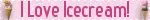
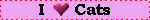
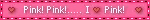
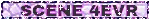
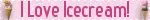
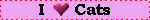
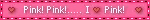
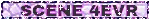

✧ Second Mayor Website Update! ✧
May 17, 2025Hello Wired! This is this website's Second Mayor Update!
٩(^ᗜ^ )و ´-
I'll probably stop celebrating as soon as I find the website is good enough to be fully shared hehe... Anyway, y'all have NO IDEA how proud I still am about the Matsuri's Music Player on the side bar. It's just, the best thing I've done in here so far.
Today it's been fine, me and my sibling decided it's was time to clean and fix up our home, so that's what we did. I actually really like how everything turned out. Have y'all ever felt the air after cleaning? Like it smells really nice, and I'm not referring to the chemicals used to clean, but the smell of air itself. It's just cleaner, fresher, [other adjectives]...
All of that cleaning left me really exhausted tho, my feet DO NOT want to move anymore. On the bright side, we finished so I can stay on my pc all the time I want! And I'm using it to continue developing this website more and more! This time I tried adding more things that make it personal to me.
(ㅅ´ ˘ `)
Apart from the obvious addition of the Music Likes to the sidebar, I also added other stuff like The One Meme (That's the name I came up with, it's staying.) and some quotes.
I actually just started getting into quotes and poems a month ago, I don't know why tho, I used to hate reading anything longer than 4 paragraphs! And the reason why is really silly: My sibling forced me to read 10 books during my vacations and that really stick with me. Every time I had to read something relatively big, my entire body would just tense up. But, for some reason, it doesn't anymore.I started to slowly read some things and decided to add some quotes I found on tumblr to the website.
(,,>﹏<,,)
Anyway, I'm gonna go to sleep like right now so...
Thanks for reading! And remember to be positive!
ヾ( ˃ᴗ˂ )◞ • *✰
Written with love by: Zahrya Rozi